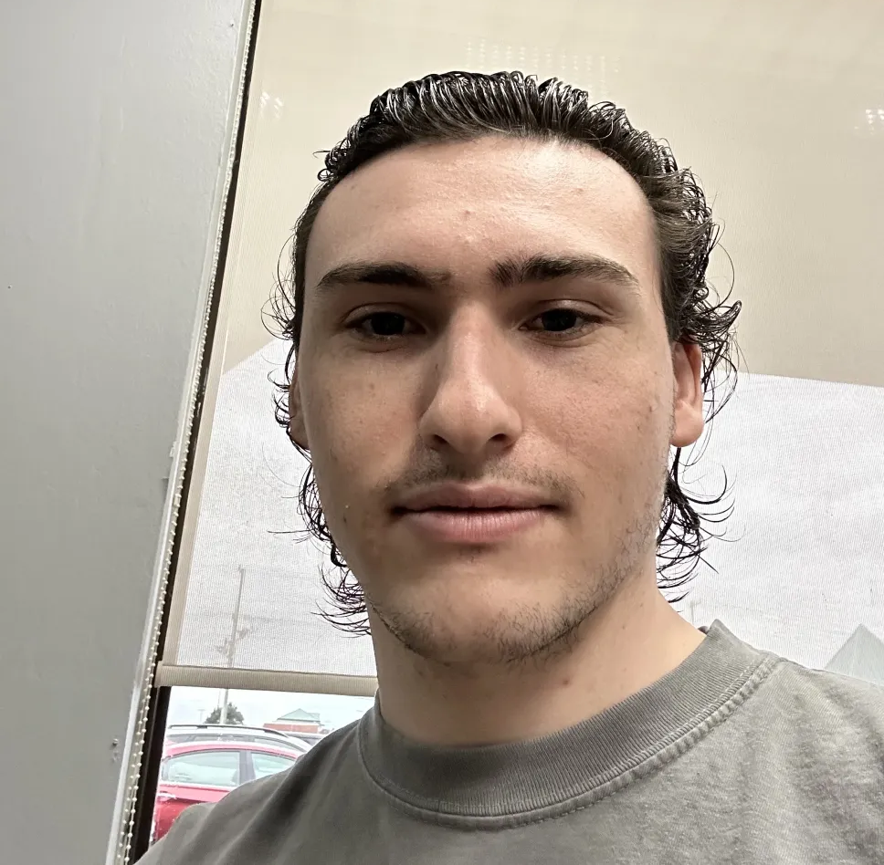

Blair Felker's Personal Website
Hi! I'm Blair. That's me on the left.
Born and raised in southern Delaware, I went to Univeristy of Delaware for my Bachelors Degree in Computer Science.
Though I studied Artificial Intelligence in college, I much prefer searching for a solution using an algorithm rather than using neural networks.
I enjoy helping others learn Computer Science, whether its the basics, data structures, or search algorithms.
My favorite programming languages are Python and C++.
You can contact me through my email at blairfelker@gmail.com for any questions.

You can download my resume here.